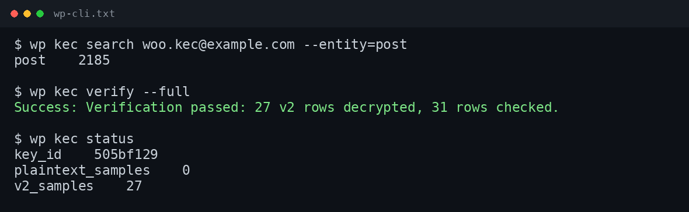

Field-level encryption.
The database only sees ciphertext.
Protect customer PII at rest without rewriting your site. Declare the fields to encrypt, keep normal WordPress APIs, search through a blind index, and rotate keys safely. The screenshots below are real data from the test database.
Backups leak more than you think.
HTTPS protects data in transit. A database dump, stolen backup or SQL injection exposes the data at rest — unless the fields themselves are encrypted.
Emails and orders in plaintext
Every DB dump, backup and analytics export contains customer names, emails and phone numbers in readable form.
Search and login break
One-way hashing protects values, but you still need exact/partial search and get_user_by() to work.
Rotation and migration are risky
Rolling your own key handling makes rotation, migration and rollback easy to get wrong.
What you get
Concrete outcomes, not just a crypto library.
PII unreadable in DB dumps
Declared fields are stored as enc:v2:…; the key stays in wp-config or a file outside the database.
WordPress APIs keep working
get_post_meta(), get_user_meta(), WooCommerce and ACF return plaintext to the app.
Blind-index search and logins
Exact and partial search, get_user_by(), email_exists() and tokenized logins keep working.
Migrate and rotate safely
Scan, dry-run, migrate, verify --full, rollback, reindex and two-phase key rotation via WP-CLI.
WooCommerce, forms, multilingual
Order meta/address index, CF7+Flamingo, ACF, Polylang and multisite tested in the lab.
GPL-2.0, no lock-in
Source, changelog and releases on GitHub. No core patches; keys are yours.
Real evidence from the database
Synthetic test data, no real PII. The key ID is shown; the key never is.

enc:v2:….
get_post_meta() and get_user_meta() return plaintext as usual.
verify --full on the test server.

Design
Default deny: only declared fields are encrypted. No core patches, no third-party plugin patches.
Registry-driven
Declare entity/meta/column fields in wp-config.php, a config file, a filter or the admin UI.
AES-256-GCM
Randomized for text; SIV deterministic for email/login so equality lookups work without exposing plaintext.
Blind index
HMAC-SHA256 full token + trigrams for exact and partial search while the database stores no plaintext.
User token mode
user_login/user_email store a 55-character token; reversible plaintext lives in encrypted meta.
WooCommerce
Order meta, address index, customer lookup and order search. HPOS order meta requires the Pro add-on.
Operations
Scan, migrate, verify --full, reindex, rollback, automatic safety dumps, two-phase key rotation, WP-CLI.
WooCommerce HPOS, audit and control.
The free core protects posts, users, terms and classic order meta. The Pro add-on adds first-class WooCommerce HPOS support plus the operational tools compliance teams ask for — with a license that never locks your data.
| Capability | Free | Pro |
|---|---|---|
| Encrypt declared post, user, term and comment fields | ✓ | ✓ |
| Blind-index search and tokenized logins | ✓ | ✓ |
| Scan, migrate, verify and two-phase rotation (WP-CLI) | ✓ | ✓ |
| WooCommerce classic order meta encryption | ✓ | ✓ |
| WooCommerce HPOS order meta encryption | — | ✓ |
| Blind-index order search with HPOS | — | ✓ |
| Audit log, dashboard and coverage report | — | ✓ |
| REST masking for support/CS roles | — | ✓ |
| Key rotation assistant (dry run, dashboard, daily cron) | — | ✓ |
| Ed25519-signed updates and license management | — | ✓ |
Core
Everything you need to encrypt declared WordPress fields and keep normal APIs working.
- AES-256-GCM with randomized and deterministic modes
- Blind-index search for exact and partial matches
- User token mode for logins and emails
- Scan → migrate → verify → rollback via WP-CLI
- WooCommerce classic order meta + address index
Store
HPOS encryption and the controls a production WooCommerce store needs.
- Encrypt HPOS order meta in
wc_orders_meta - Order search through blind indexes, merged into HPOS queries
- Dashboard with license, HPOS, coverage and audit
- Mask PII in REST for roles without the sensitive-data capability
- Rotation assistant with dry run and daily cron
- Ed25519-signed updates; expiry only blocks new writes, never decryption
Built for real WordPress data.
Agencies, store owners and membership sites that need PII protection without giving up search, logins or the normal admin experience.
WooCommerce stores
Encrypt billing/shipping fields and the address index while order search and customer lookup keep working.
Membership & user sites
Tokenize login/email columns and keep authentication, password reset and WP-CLI user management working.
Forms, ACF and CRM meta
Encrypt declared form/ACF fields and search emails through the blind index; keep Flamingo submissions usable.
Legacy migrations
Read legacy ciphertext, migrate to v2, verify every row and rotate keys in two phases.
Install
Requires PHP 8.0+, WordPress 6.4+ and OpenSSL. Back up the database before migrating existing data.
Install the plugin and set KEC_KEY + KEC_TOKEN_SECRET.
Declare only the fields you need in KEC_FIELDS (default deny).
Run scan → migrate → verify --full; reindex search.
git clone https://github.com/thiennhant95/wp-encrypted-fields.git
cp -r wp-encrypted-fields wp-content/plugins/
wp plugin activate wp-encrypted-fields
# wp-config.php (before require wp-settings.php)
define('KEC_KEY', 'base64:REPLACE_WITH_32_BYTE_KEY');
define('KEC_TOKEN_SECRET', 'base64:REPLACE_WITH_STABLE_SECRET');
define('KEC_FIELDS', [
'user' => [
'columns' => [
'user_login' => ['type' => 'login', 'max_length' => 60, 'search' => true],
'user_email' => ['type' => 'email', 'max_length' => 100, 'search' => true],
],
'meta' => ['first_name' => ['type' => 'text', 'search' => true]],
],
'post' => [
'post_types' => ['shop_order'],
'meta' => [
'_billing_email' => ['type' => 'email', 'search' => true],
'_billing_address_index' => ['type' => 'text', 'search' => true],
],
],
]);
wp kec scan
wp kec migrate --backup-confirmed
wp kec verify --fullVerification results
Same test lab: WordPress 7.1.4, PHP 8.1, MySQL 5.7, plugin 0.4.0.
| Area | Result |
|---|---|
| Plugin compatibility | 100 plugins (WooCommerce, CF7/Flamingo, ACF, Yoast, Rank Math, Elementor, WPForms, Polylang, BuddyPress, bbPress, FluentCRM, membership/LMS/form/CRM/cache/security/backup…). 99 pass; encrypted-blog fails because of its own plugin error. |
| Multisite | 2 sites: per-site meta encryption and search indexes; user columns use shared wp_users/wp_usermeta; user creation and role assignment fixed in 0.2.2. |
| Multilingual | Polylang en/vi: translated posts, encrypted meta, search and language filters pass. |
| Operations | Backup/restore, automatic safety dumps, two-phase key rotation, verify --full, lock and backup-ack TTL rehearsed on the test server. |
| Data at rest | DB dumps contain ciphertext; the key is not in the database; email lookup and auth still work through tokens. |
post_content/post_title are not encrypted;
custom tables without an adapter (WP Mail Logging, MailPoet, FluentCRM…) remain plaintext;
HPOS order meta requires the licensed Pro add-on.
Questions buyers ask
Does this replace HTTPS/SSL?
No. HTTPS protects data in transit. Encrypted Fields protects the declared fields at rest, so a database dump or stolen backup does not expose them.
Does WooCommerce order search still work?
Yes for declared searchable fields: the plugin removes encrypted columns from WooCommerce's SQL search and merges blind-index results. With HPOS enabled this requires the licensed Pro add-on.
Do get_user_by(), email_exists() and logins still work?
Yes. Login/email columns store blind-index tokens, raw equality/IN lookups are rewritten, and the authentication hooks resolve tokens back to plaintext.
What happens if I lose the key?
Encrypted values are unrecoverable without the key. Keep backups of wp-config/key files, store keys outside the database, and rehearse rotation before changing them.
What is not encrypted?
post_content/post_title, wp_options, and custom tables without an adapter. Declared meta that remains plaintext is reported by wp kec verify --full.
Is it free?
The core plugin is free (GPL-2.0-or-later) with source on GitHub. A separate Pro add-on provides HPOS order encryption, audit logging, coverage reporting, REST masking, key rotation and license-backed updates. Pro is quoted per store — request a license. Expiry never blocks decryption; only new HPOS writes pause.
What is required to activate Pro?
Pro needs the PHP sodium extension, the license endpoint in KEC_PRO_LICENSE_SERVER, the pinned public key in KEC_PRO_LICENSE_PUBLIC_KEY, and a key bound to your store domain. Activations and updates are Ed25519-signed, so a leaked license key cannot forge them.
Ready to protect customer PII?
Install the plugin, declare the fields you need, and run verify --full before going live.